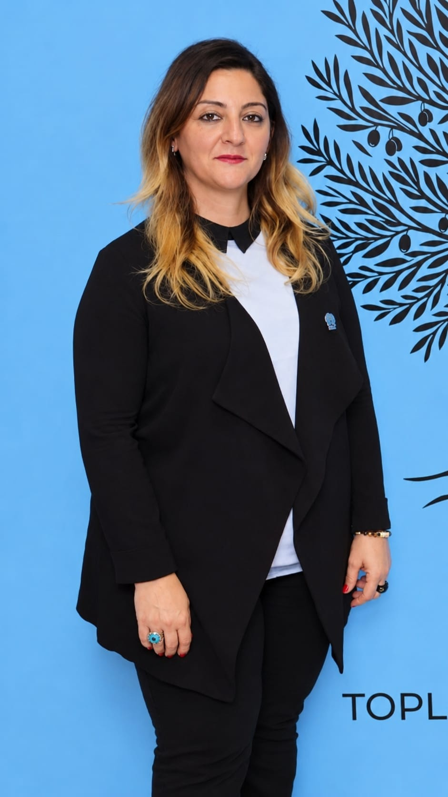
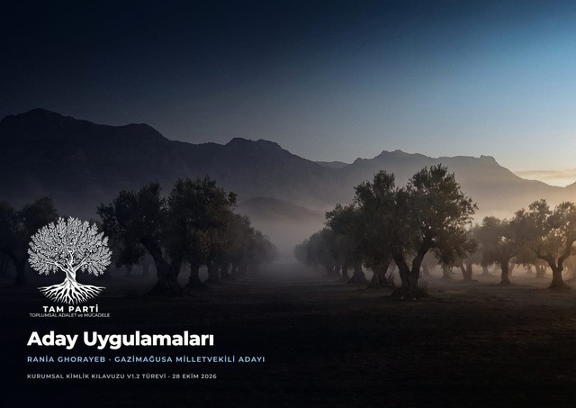
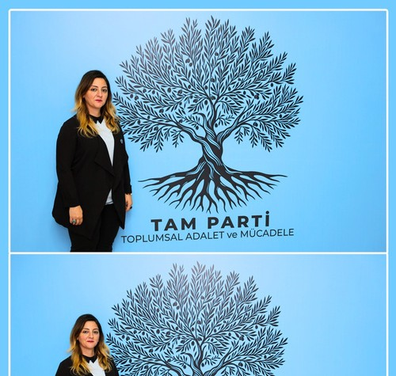

Eşit iş ve istihdam fırsatları
İşe alım ve istihdam süreçlerinde cinsiyet, köken veya kişisel ilişkiler yerine liyakat, deneyim ve niteliklerin esas alınması.
GAZİMAĞUSA MİLLETVEKİLİ ADAYI · SIRA NO 9
“Adalet, hayatın her alanında yaşanması gereken bir değerdir.”
Portfolyoyu keşfet ↓
KISA TANITIM
Ben Rania Ghorayeb. Beyrut doğumluyum, Kuzey Kıbrıs Türk Cumhuriyeti vatandaşıyım. Arap kökenliyim ve Kıbrıs kökenim büyükannem aracılığıyla gelmektedir. Bir anne ve çalışan bir kadın olarak hayatım boyunca kendi ayaklarım üzerinde durdum. İş hayatı, aile sorumlulukları ve çocuklarımın geleceğini inşa etme sürecinde farklı zorluklarla karşılaştım. Kadınların çalışma hayatında ve toplumsal yaşamda eşit fırsatlara sahip olması gerektiğine inanıyorum.
Girne Amerikan Üniversitesi · İşletme Yönetimi mezunu
25 yılı aşkın uluslararası yönetim deneyimi.
Kıbrıslı Araplar Derneği: Kurucu Üye, Kadınlar Birimi Başkanı ve Kültürel Etkinlikler Koordinatörü.
ÇALIŞMA ALANLARI
İşe alım ve istihdam süreçlerinde cinsiyet, köken veya kişisel ilişkiler yerine liyakat, deneyim ve niteliklerin esas alınması.
Kadınların ekonomik ve mesleki açıdan desteklenmesi ve kadınlarla erkekler arasında eşit fırsatların sağlanması.
Kamu kaynaklarının korunması, şeffaflık, hesap verebilirlik ve vatandaşların haklarının savunulması.
Köken, dil, sosyal geçmiş veya aidiyet farkı gözetilmeksizin herkes için saygı, fırsat ve onurlu bir yaşam.


TOPLUMSAL ADALET VE MÜCADELE
TAM Parti — Toplumsal Adalet ve Mücadele.